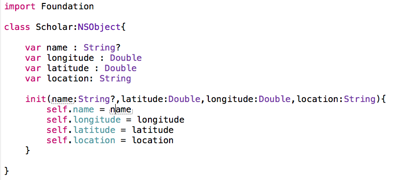
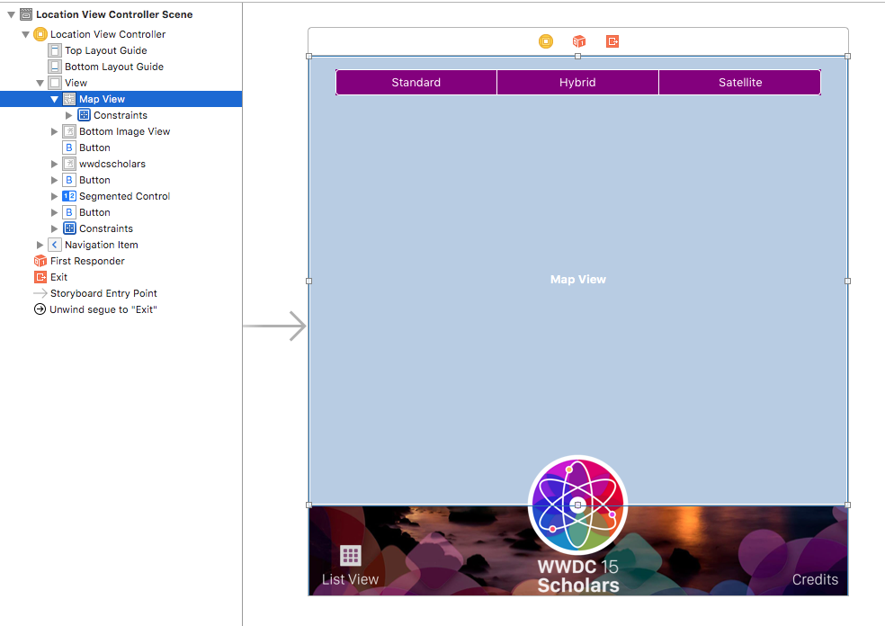
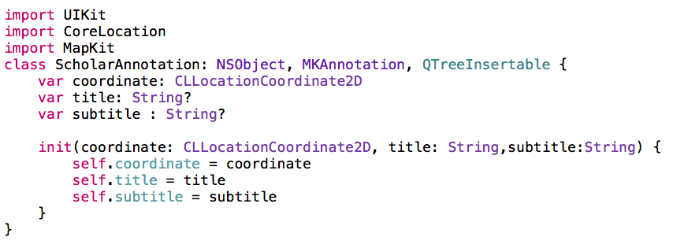
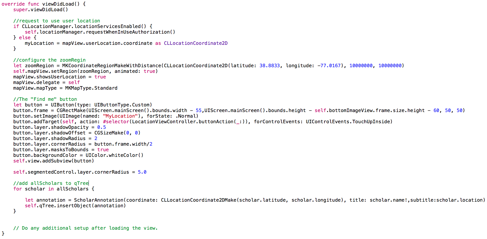
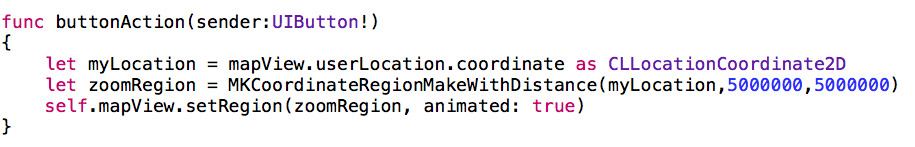
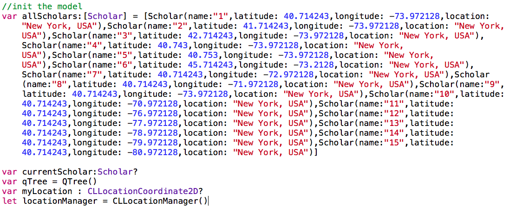
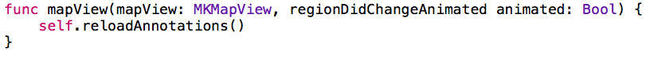
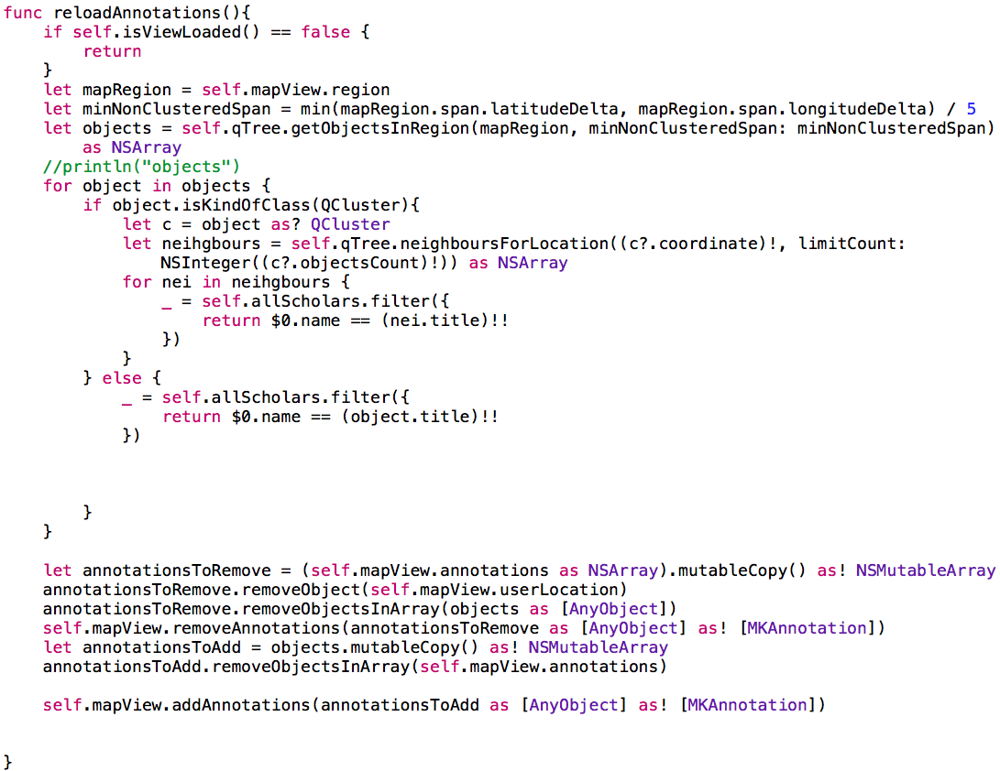
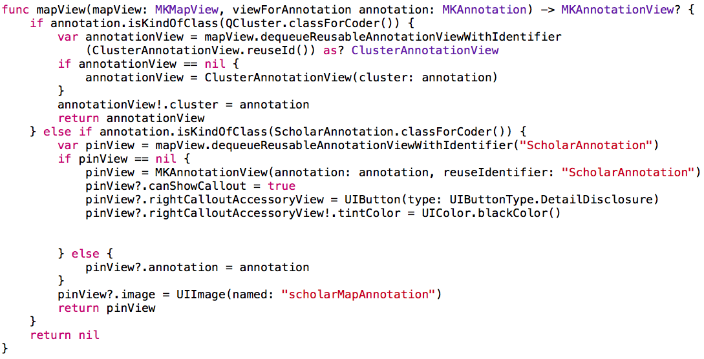

is back - June 13 - 18, 2016

by Gelei Chen

Create a swift file that contains your data model. As an example, i've created a Scholar.swift file to represent my data model.
Just dragged the MKMapView to your View Controller inside storyboard directly.
Scholar Annotations are ___________ (Add Image of what scholar annotation is). As an example, i've created a ScholarAnnotation.swift file to represent my ScholarAnnotation shown on the map.
Lastly, we will implement the MKMapViewDelegate. Inside the LocationViewController.swift:
Change you viewDidLoad method to the following:
Then add a function for the button action. In my example, i've named it - buttonAction.
Initialize/Declare some of the global variables.
regionDidChangeAnimated is ________. This is where we will call the reloadAnnotations method.
Every time user change the map scale, we will call reloadAnnotations. This will ________.
We now can configure different views for different annotation.
